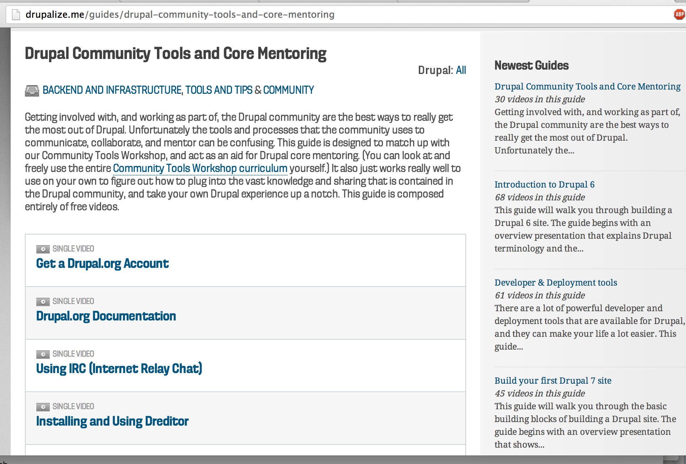

Picking Issues to work on
aka: I want to help. I don't know what to do!
Thanks ZenDoodles and xjm
YesCT
Cathy Theys
@YesCT
Cheppers, Breakthrough Technologies, Gittip
I mentor, plan sprints, review patches, mostly for core these days.
http://tinyurl.com/webchick-iq
(https://www.youtube.com/watch?v=NvV38nJObIE&t=12m57s)
Finding issues
Make it easy on yourself
Novice
Date
Status
first simple! success!
- novice?
- initiatives
- focus?
- tags
- pair up
- metas?
Core initiatives
https://drupal.org/community-initiatives/drupal-core
and https://drupal.org/node/2107085
Metas

https://drupal.org/contributor-tasks/write-issue-summary

Automatic instructions
work in progress at
https://drupal.org/node/2013222
Contributor task documents
http://drupal.org/contributor-tasks/review
http://drupal.org/contributor-tasks/do-accessibility-review

Strategy
Scale
Resources
drupalize.me/guides/drupal-community-tools-and-core-mentoring

Resources
drupalladder.org/
Resources
- drupal.org/contributor-tasks
Action
- drupal mentoring office hours
- #drupal-contribute
- drupical.com
Thanks!
https://drupal.org/node/2013222
https://drupal.org/core-mentoring